Modelos generativos, música y una obra para orquesta creada entre personas y una máquina.
Rodrigo F. Cádiz
Instituto de Música y Departamento de Ingeniería Eléctrica
Pontificia Universidad Católica de Chile
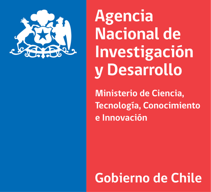
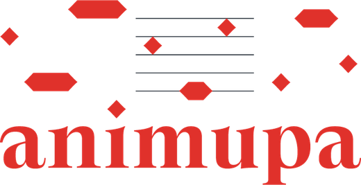
ANID Fondecyt Regular 1230926, “Creativity and musicality of deep learning generative models for musical content”. Núcleo Milenio en Prácticas Actuales de la Música Clásica (Animupa), NCS2025_12.
Es el comienzo de una obra para orquesta de cinco minutos. Escuchemos el primer minuto sin saber nada más.
¿Quién compuso esto?
La Auckland Philharmonia estrena Fountain: Form One, de David Chisholm, en un concierto para niños de 8 a 12 años.
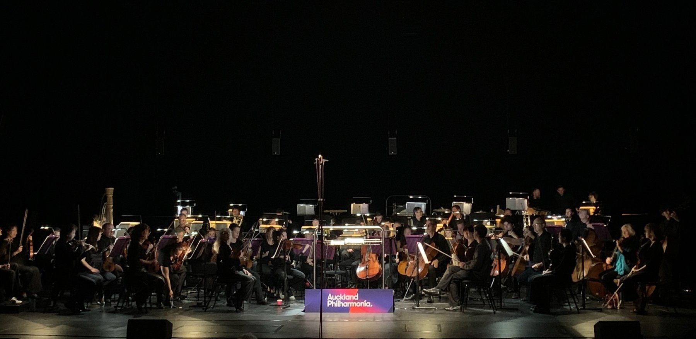
Escribió la obra de la que todo partió y, al final, escribió la partitura completa.
Generó todo el material sonoro y su forma, guiada por la grabación de Chisholm.
Escribió las instrucciones, escuchó cientos de salidas, eligió cuatro y las unió.
Votemos ahora, a mano alzada. Volveremos a esta pregunta al final de la clase.
Las definiciones que usa la psicología hoy, y por qué casi ninguna menciona sentimientos.
Aprendizaje profundo, modelos generativos y la idea central: el espacio latente.
Experimentos de nuestro laboratorio con redes que generan acordes y fragmentos musicales.
Con las tres herramientas en la mano, el caso se puede cerrar.
Es la definición estándar en psicología: originalidad más efectividad. Lo nuevo sin valor es ruido; lo valioso sin novedad es oficio.
Los dos criterios son relativos. ¿Nuevo respecto de qué? ¿Valioso según quién?
Runco y Jaeger (2012), The standard definition of creativity. Amabile (1996), Creativity in context.
Rasgos, motivación, intención de quien crea.
Las operaciones que producen lo nuevo.
El objeto: una obra, una idea, un acorde.
El contexto que presiona, recibe y juzga (press).
Las dos pueden ser verdad al mismo tiempo. No se contradicen: hablan de P distintas.
Rhodes (1961), An analysis of creativity. Batey (2012).
Unir de forma inesperada ideas conocidas. Una metáfora; un acorde que es dos acordes a la vez.
Recorrer un espacio de posibilidades con reglas y encontrar lugares no visitados.
Cambiar las reglas del espacio, de modo que lo antes imposible se vuelve posible.
¿Nuevo para quién? Creatividad P, psicológica: nuevo para quien lo crea. Un niño que inventa una rima que ya existía.
Creatividad H, histórica: nuevo para todo el mundo. Schoenberg abandonando la tonalidad.
Boden (2004), The creative mind: Myths and mechanisms. Boden (2009), Computer models of creativity.
Para Csikszentmihalyi, una idea nueva solo cuenta cuando un campo la selecciona y el dominio la retiene. Es un ciclo evolutivo: variación, selección, retención.
Csikszentmihalyi (1996), Creativity: Flow and the psychology of discovery and invention. Csikszentmihalyi (1999), Implications of a systems perspective.
Respecto del dominio: todo lo que la tradición ya contiene. La memoria colectiva del campo es el detector de novedad.
Según el campo: el valor de una obra no tiene instrumento de medida, salvo el juicio de quienes conocen el dominio a fondo.
Las notas de Bach nunca cambiaron. Cambió el veredicto del campo.
El estudio de sistemas computacionales que, al asumir ciertas responsabilidades, exhiben comportamientos que observadores imparciales considerarían creativos.
Colton y Wiggins (2012), traducción propia.
Es un área joven: la International Conference on Computational Creativity se celebra cada año desde 2010.
Colton y Wiggins (2012). Veale, Cardoso y Pérez y Pérez (2019). computationalcreativity.net
Inteligencia artificial. Sistemas que hacen tareas que asociamos a la inteligencia: jugar, traducir, componer.
Aprendizaje de máquina. Una rama de la IA: en vez de seguir reglas escritas por alguien, el sistema aprende de datos.
Aprendizaje profundo. Aprendizaje de máquina con redes neuronales de muchas capas. Es lo que explotó desde 2012.
Por eso falla la idea de que “un programa solo hace lo que su programador sabía hacer”. En un sistema que aprende, nadie escribió las reglas.
Mumford y Ventura (2015), The man behind the curtain: Overcoming skepticism about creative computing.
Cada conexión tiene un peso. La señal entra, se multiplica, se suma y pasa capa por capa hasta una respuesta.
Entrenar es comparar la respuesta con el ejemplo correcto y ajustar millones de pesos, un poco cada vez.
Más datos. Internet digitalizó imágenes, textos y música a escala enorme.
Más cómputo. Las tarjetas gráficas (GPU) hacen en horas lo que antes tomaba meses.
Mejores técnicas. Convoluciones, memoria de largo plazo, regularización, transformers.
El punto de quiebre: en 2012 una red, AlexNet, superó a todas las técnicas de clasificación de imágenes de su época.
Krizhevsky, Sutskever y Hinton (2012). Cádiz et al. (2021), sección 1.
Un modelo generativo aprende cómo se distribuyen los datos. Por eso puede producir ejemplos que nunca vio: los puntos con anillo.
Al final, el falsificador engaña al detective: genera datos que no se distinguen de los reales a partir de puro ruido.
Goodfellow et al. (2014), Generative adversarial nets.
Kingma y Welling (2014), Auto-encoding variational Bayes.
Toquemos un punto del anillo: escucharemos una tríada que el modelo conoce. Entre dos vecinos, escucharemos algo que nunca vio. En el centro, estaremos lejos de todo lo conocido.
Modelo de juguete, no es TimbreNet: ilustra el hallazgo de Macaya, Parra y Cádiz (2025), donde las tétradas aparecen entre las tríadas que las forman.
Una GAN entrenada con obras de la colección del Museo Nacional de Bellas Artes. Lo que vemos es un recorrido continuo por su espacio latente.
CreativAI UC Lab. Ver Cádiz et al. (2021), sección 5.
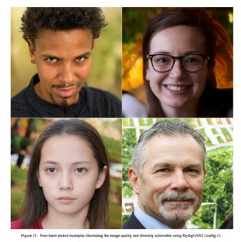
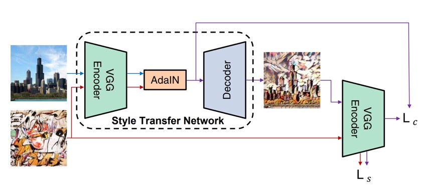
También aquí hay un espacio latente, discreto, que el modelo recorre paso a paso. Es el modelo que se usó en Fountain.
Magenta, Google (desde 2016): magenta.tensorflow.org. Copet et al. (2023), Simple and controllable music generation (MusicGen, Meta).
CreativAI UC Lab nació con un proyecto ArTeCiH de la Vicerrectoría de Investigación, codirigido con Denis Parra (Ciencia de la Computación). Hoy sigue con Fondecyt 1230926.
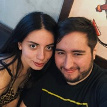
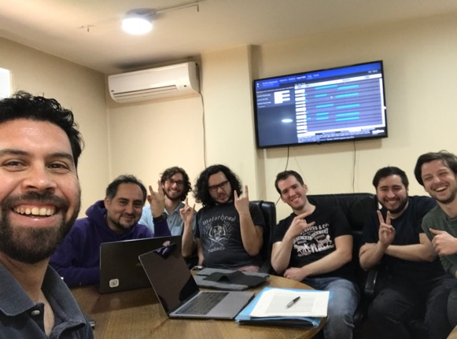
creativai-uc.github.io github.com/CreativAI-UC
Datos: tríadas mayores, menores, aumentadas y disminuidas, sobre 36 notas base, en tres dinámicas (f, mf, p), tocadas y grabadas en piano.
43.200 ejemplos de 4 segundos, tras aumentar los datos.
Nada de teoría: la red recibe solo audio, transformado en una imagen espectral (MFCC).
Un tipo de acorde que la red sí conocía.
Cádiz, Macaya, Cartagena y Parra (2021), Frontiers in Robotics and AI 8:680586, figura 1.
Agustín Macaya, CreativAI UC Lab (2019). 3 min 51 s.
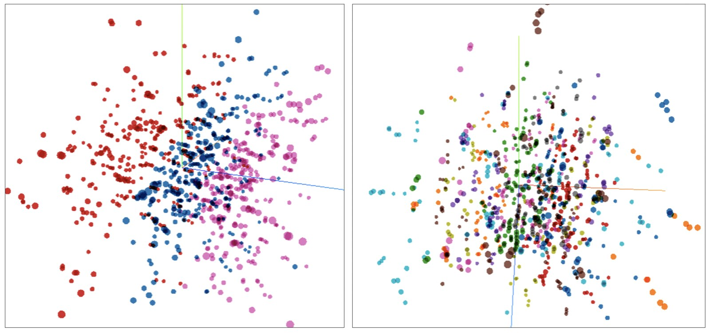
Coloreado por dinámica: a gran escala, el mapa separa forte, mezzoforte y piano.
Coloreado por nota base: de cerca, los vecinos son acordes que comparten notas.
Cádiz et al. (2021), figura 4: espacio latente de tres dimensiones de TimbreNet.
Agustín Macaya, CreativAI UC Lab. 1 min.
Arriba: acordes nuevos, pero parecidos a los del entrenamiento.
Abajo: acordes de cuatro notas, que la red nunca escuchó. Siguen apilados por terceras: tienen sentido armónico.
Sol♯m7 es una tríada menor (Sol♯ Si Re♯) y una mayor (Si Re♯ Fa♯) superpuestas. ¿Concepto nuevo, o asociación nueva de conceptos conocidos?
Cádiz et al. (2021), figura 6. Audio: acordes generados por TimbreNet.
En AIMC 2025 repetimos la pregunta con acordes simbólicos: VAEs de 4, 8, 16 y 32 dimensiones, entrenados con 972 tríadas y probados con 792 tétradas que nunca vieron.
La novedad surge de interpolar lo conocido.
Macaya, Parra y Cádiz (2025), AIMC 2025, Bruselas, tabla 8. Posiciones del dibujo: ilustrativas.
Macaya, Parra y Cádiz (2025), tablas 5, 6 y 9, y figura 6 (redibujada). TimbreNet: Cádiz et al. (2021), sección 6.
Datos: 269.719 fragmentos de 4 compases del conjunto MAESTRO, más de 200 horas de interpretaciones de piano.
Cádiz et al. (2021), sección 4.2. Manuel Cartagena, CreativAI UC Lab.
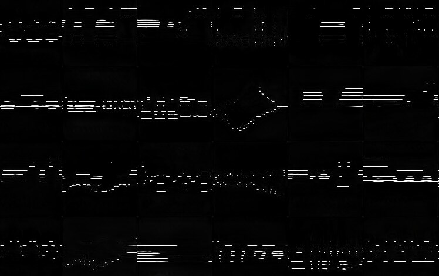
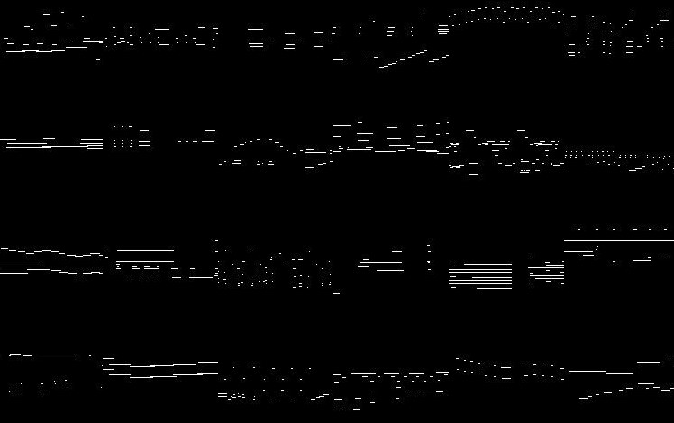
Cádiz et al. (2021), figuras 8 y 9.
Imagen: StyleGAN2 entrenada con retratos del Museo Nacional de Bellas Artes.
Música: StyleGAN Pianorolls, en versiones entrenadas con MAESTRO y con LAKH MIDI.
Los espacios latentes de ambas se recorrieron sincronizados (Lucid Sonic Dreams). Solo el orden temporal de los fragmentos musicales fue decisión humana.
Cádiz et al. (2021), sección 5. youtu.be/6CVAzQiMPlM y youtu.be/THxEOvRG4Ss
Cádiz et al. (2021), figuras 11 y 12. Conteos reconstruidos desde los gráficos publicados (n = 44). Escala de 1 a 5, enunciado: “el contenido es creativo”.
Falta una prueba de verdad: una obra completa frente a un campo real. Eso es Fountain.
La grabación de Pierre Boulez à la discothèque (Chisholm, rev. 2022).
Su perfil armónico, más instrucciones de texto escritas por Rodrigo Cádiz.
Ya entrenado con unas 20.000 h de música. Solo inferencia: ningún parámetro cambió.
De muchas salidas, Cádiz elige cuatro y las une en una forma de cinco minutos.
Chisholm escucha una y otra vez, con herramientas de análisis, y escribe para orquesta.
Auckland Philharmonia, David Kay, NZ Dance Company, BabelScores.
“Voy variando cosas para que le acomoden a mi oído cuando quiero, pero honrando la forma de la obra por completo.”
David Chisholm, correspondencia con el autor (2024). Traducción propia.
Cádiz y Chisholm (en preparación), Where does creativity live?, secciones 5.1 a 5.4.
Pierre Boulez à la discothèque, David Chisholm.
Desde SoundCloud: requiere conexión a internet.
Audio generado por MusicGen y montado por Rodrigo Cádiz: el material que Chisholm transcribió.
Archivo local (Fountain1), 5 min 9 s. Funciona sin conexión.
Fuente: SoundCloud de David Chisholm. Audio generado: Fountain1, MusicGen, Rodrigo Cádiz (2024).
Créditos en la partitura publicada
Fountain: Form One
Four Generative AI forms for orchestra, by David Chisholm
After AI training, direction and structural concatenation by Rodrigo Cádiz
Esa última línea inventa un rol que la música de concierto no tenía con nombre: quien dirige la etapa generativa.
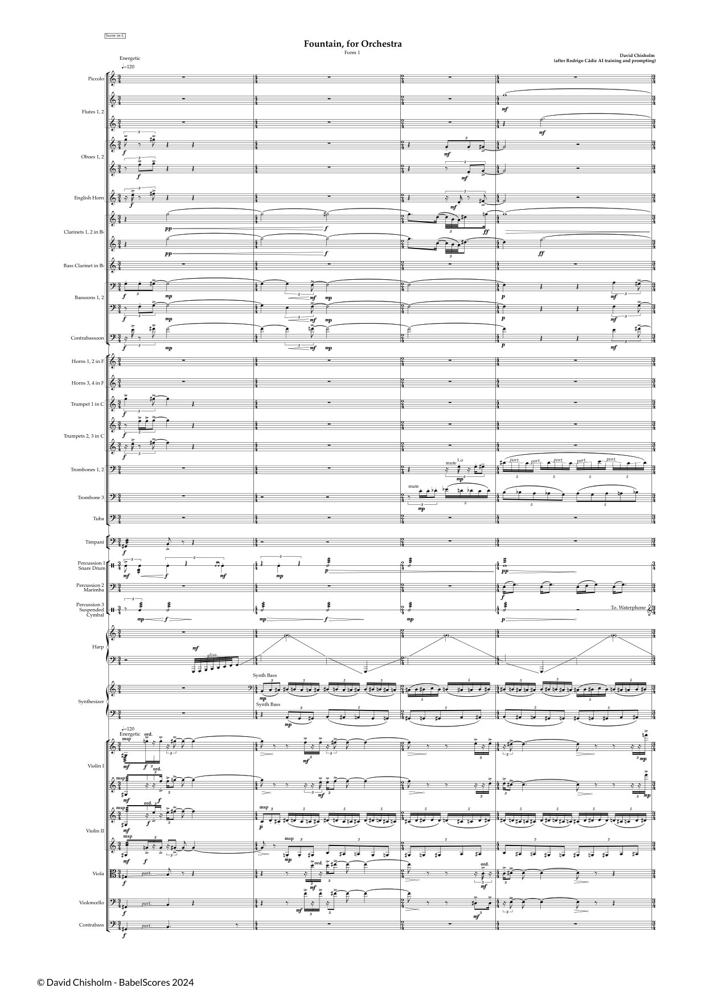
Fountain: Form One, por la Auckland Philharmonia bajo la dirección de David Kay. Es lo mismo que escuchamos al comienzo, pero ahora sabemos de dónde viene cada sonido.
Desde SoundCloud: requiere conexión a internet.
Comparemos un pasaje con el mismo pasaje del audio de la máquina: la forma es la misma; el sonido ya es de Chisholm.
David Chisholm, SoundCloud: “Fountain | Four Generative AI Forms for Orchestra: Form 1 (2024)”.
“Aunque la IA no suena para nada como yo, una vez que la transcribo, sí suena como yo.”
David Chisholm, correspondencia (2024)
“While the AI doesn’t sound like me at all, once I transcribe it does sound like me. It is exposing how the decisions I make based on my understanding of the AI choices equally expose my own training and biases.”
El efecto espejo: transcribir una máquina guiada por la propia obra revela los propios hábitos.
“No soy ni más ni menos producto de mi entrenamiento que la IA.”
David Chisholm, prefacio de la partitura (2024)
“I am no more or less a product of my training than the AI.”
La simetría del entrenamiento: el modelo aprendió de un corpus; el compositor, de una tradición. Ninguno inventó desde cero.
El 12 de noviembre de 2024 el campo dijo que sí: ensayó, tocó, bailó, publicó y volvió a programar la obra.
Cádiz y Chisholm (en preparación), figura 2.
¿Quién compuso Fountain?
Un bucle.
La creatividad no vivía en Chisholm, ni en MusicGen, ni en Cádiz. Vivía en el ciclo de variación, selección y retención que los tres armaron con un campo que dijo que sí.
Como la fotografía en el siglo XIX: el arte está en la persona que usa la herramienta. La IA no tiene intención ni deseo de expresar.
Hertzmann (2018), Can computers create art? Arts 7(2): 18.
Redes diseñadas para desviarse de los estilos que aprendieron; jueces humanos aceptaron sus resultados como arte.
Elgammal et al. (2017), CAN. Ornes (2019), PNAS 116(11): 4760.
Fountain no cae en ningún polo. La pregunta útil no es qué es la máquina, sino qué responsabilidades se delegaron, y a quién.
Creo que hay evidencia de que sí.
O quizás tendríamos que redefinir lo que entendemos por creatividad humana.
Las 20.000 horas de música con que se entrenó MusicGen no aparecen en ningún crédito. ¿Deberían? ¿Cómo?
Si nadie hubiera elegido entre las salidas del modelo, ¿habría habido obra?
Pensemos en nuestro propio estilo, en música, en código o en escritura. ¿Cuánto de él es entrenamiento?
Cádiz, R. F., y Chisholm, D. (en preparación). Where does creativity live? A systems-model case study of human–AI co-creation in orchestral composition.
Cádiz, R. F., Macaya, A., Cartagena, M., y Parra, D. (2021). Creativity in generative musical networks: Evidence from two case studies. Frontiers in Robotics and AI, 8, 680586.
Macaya, A., Cádiz, R. F., Cartagena, M., y Parra, D. (2020). Latent Chords: Generative piano chord synthesis with variational autoencoders. HAI-GEN, ACM IUI.
Macaya, A., Parra, D., y Cádiz, R. F. (2025). Unsupervised generative chord representation learning and its effect on novelty-creativity and fidelity-standards. AIMC 2025, Bruselas.
Chisholm, D. (2024). Fountain: Form One. Four Generative AI forms for orchestra [partitura]. BabelScores.
Amabile, T. M. (1996). Creativity in context. Westview Press.
Boden, M. A. (2004). The creative mind: Myths and mechanisms (2.ª ed.). Routledge.
Colton, S., y Wiggins, G. A. (2012). Computational creativity: The final frontier? ECAI 2012.
Csikszentmihalyi, M. (1996). Creativity: Flow and the psychology of discovery and invention. HarperCollins.
Csikszentmihalyi, M. (1999). Implications of a systems perspective for the study of creativity. En R. J. Sternberg (Ed.), Handbook of creativity.
McCormack, J., Gifford, T., y Hutchings, P. (2019). Autonomy, authenticity, authorship and intention in computer generated art. EvoMUSART.
Mumford, M., y Ventura, D. (2015). The man behind the curtain. ICCC 2015.
Rhodes, M. (1961). An analysis of creativity. Phi Delta Kappan, 42(7), 305–310.
Runco, M. A., y Jaeger, G. J. (2012). The standard definition of creativity. Creativity Research Journal, 24(1), 92–96.
Veale, T., Cardoso, F. A., y Pérez y Pérez, R. (2019). Systematizing creativity: A computational view. Springer.
Copet, J., et al. (2023). Simple and controllable music generation. NeurIPS 2023.
Elgammal, A., Liu, B., Elhoseiny, M., y Mazzone, M. (2017). CAN: Creative adversarial networks. ICCC 2017.
Goodfellow, I., et al. (2014). Generative adversarial nets. NeurIPS 2014.
Hertzmann, A. (2018). Can computers create art? Arts, 7(2), 18.
Huang, X., y Belongie, S. (2017). Arbitrary style transfer in real-time with adaptive instance normalization. ICCV 2017.
Karras, T., et al. (2020). Analyzing and improving the image quality of StyleGAN. CVPR 2020.
Kingma, D. P., y Welling, M. (2014). Auto-encoding variational Bayes. ICLR 2014.
Krizhevsky, A., Sutskever, I., y Hinton, G. E. (2012). ImageNet classification with deep convolutional neural networks. NeurIPS 2012.
Ornes, S. (2019). Computers take art in new directions, challenging the meaning of “creativity”. PNAS, 116(11), 4760–4763.
University of Auckland (2025, 24 de marzo). As composed by David Chisholm ... and AI [noticia].
rcadiz@uc.cl rodrigocadiz.com
Con David Chisholm, Agustín Macaya, Manuel Cartagena y Denis Parra.
ANID Fondecyt Regular 1230926, “Creativity and musicality of deep learning generative models for musical content”. Núcleo Milenio en Prácticas Actuales de la Música Clásica (Animupa), NCS2025_12.